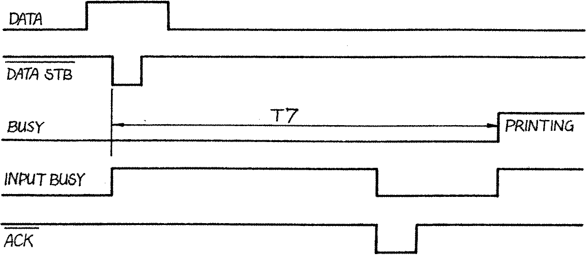

80-Bus News |
July–October 1982 · Volume 1 · Issue 3 |
| Page 37 of 51 |
|---|

T7: 0·2 ~ 1 msec |
There are variations, firstly, most graphic printers require eight bits of data not seven. The timing of the strobe pulse is subject to a minimum length, and the settle times tend to vary from printer to printer and also on the length of the interconnecting cables. The input requirements of the printer will most likely be at variance with the output driving capability of the PIO device. So how to overcome these problems ?
It is not significant that the printer may or may not require eight bits of data. If eight bits are not required simply do not connect the eighth bit. Having said that, the Centronics 730 alone of the whole Centronics range requires only seven bits, put will print double width if the eighth bit is not tied to ground.
The settle time can be found empirically by changing the number of NOPs in the driver routine, although those given below are have been found to work with almost all printers. The strobe pulse length must not be less than the minimum period, but making it longer does affect the operation, so the time chosen is one which has been found to work with all printers tried.
It has been noted that the printer sends an ACK signal after each character. At first sight this may appear to a good candidate for a handshake signal. However, almost all Centronics type printers can not accept data during a print and carriage return/line feed cycle, so the BUSY line becomes a better candidate as this is active during the print and CRLF cycles. The ACK signal is simply ignored, and in practice this has been no impediment.
Lastly, the input characteristics of the printer inputs vary widely, but are typically at TTL levels but ‘pulled up’ internally with 150R resistors for better noise immunity. This represents an input load of about 8 TTL unit loads, whilst the B side of the PIO device is (on paper) only capable of driving 1 TTL unit load and the A side of the PIO is only capable of an unspecified lesser amount. It would seem then that the PIO would require buffering to be able to drive the Centronics input direct. But MOS devices are considerably more rugged than we have been led to believe, and manufacturers’ specifications are always on the conservative side. In practice the PIO drives the Centronics type interface very well without buffering despite the apparent 8 times overload presented to the outputs. Collectively the numbers of Nascoms and Geminis driving Centronics type interfaces must add up to many thousands of hours satisfactory operation. Of course overloading the PIO device is likely to shorten its statistical life, but as this runs into many hundreds of thousands of hours, premature failure after a few thousand hours is hardly likely to be an inconvenience. I have heard of only one PIO fatality caused through driving a Centronics type interface, and the cost of a new PIO is only slightly more than the cost of incorporating two dibrectional buffers such as the 74LS245.
| Page 37 of 51 |
|---|